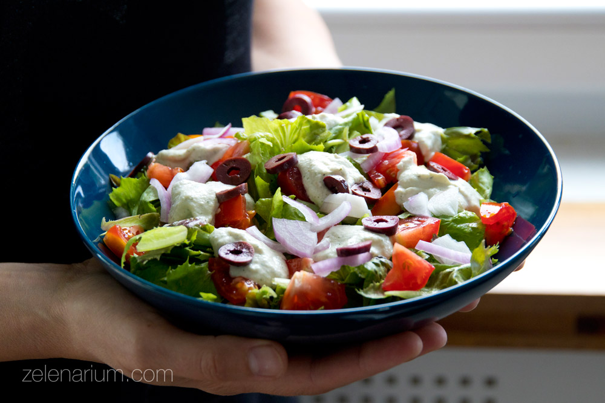
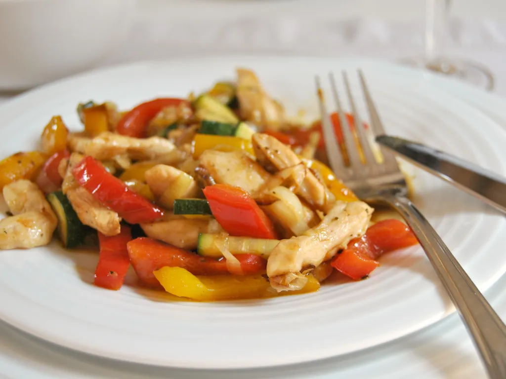
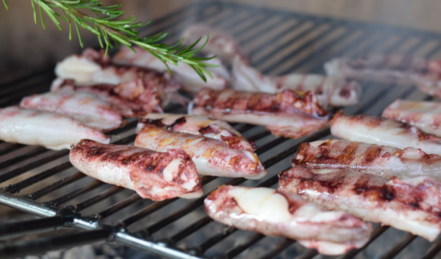
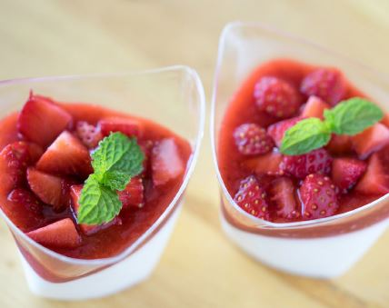
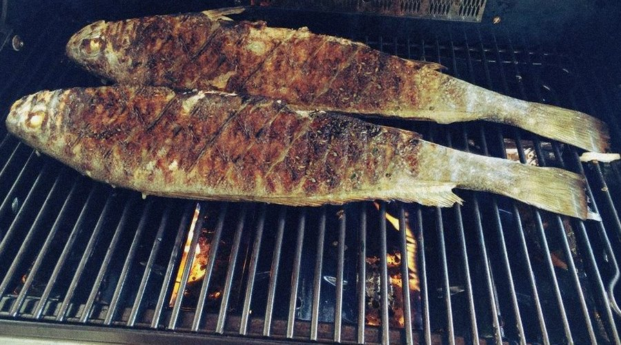
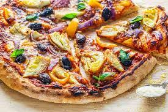
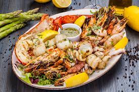
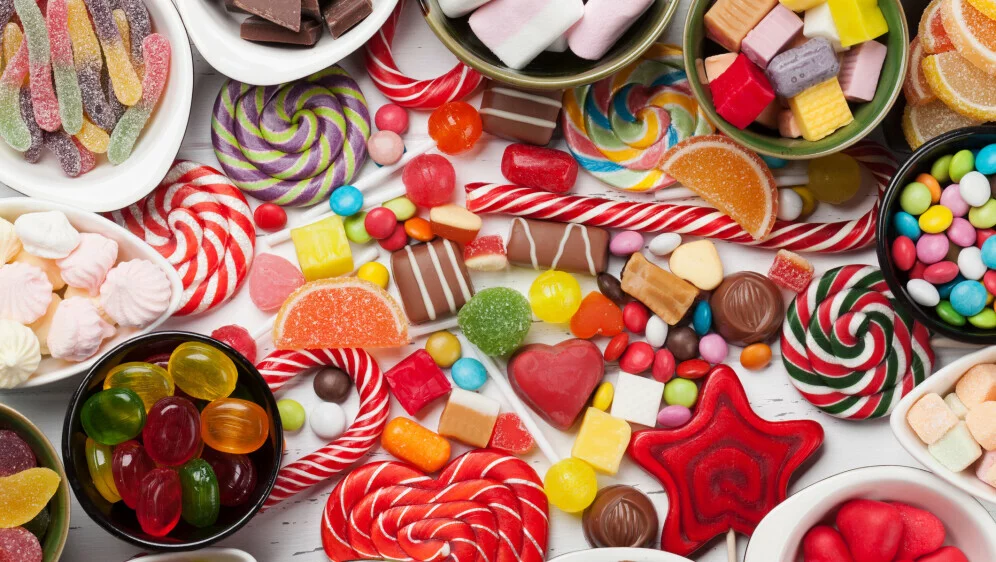
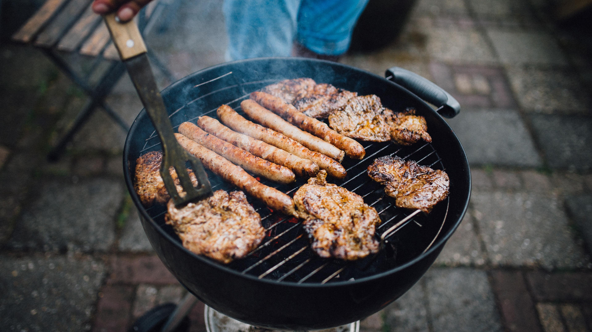
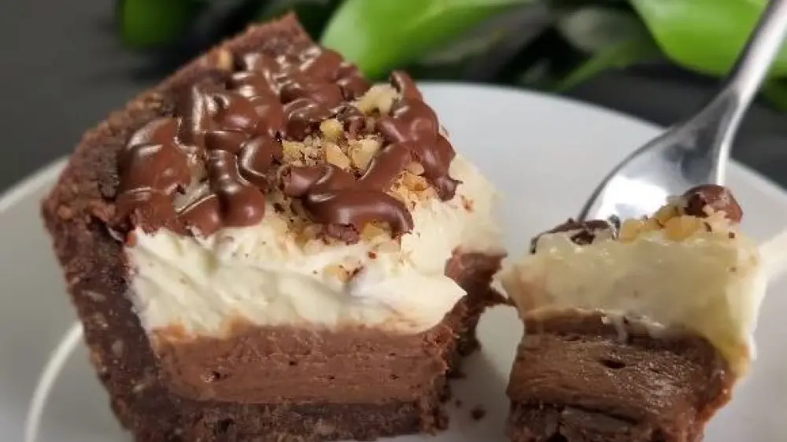

Svježa salata s domaćim umakom

Piletina sa sezonskim povrćem

Lignje na žaru s aromatičnim začinima

Desertna kreacija - savršen završetak obroka

Svježe ulovljena riba s roštilja

Vegetarijanska pizza s raznovrsnim povrćem

Morski plodovi na tanjuru - delicija iz mora

Raznovrsni slatkiši za sladokusce

Roštilj na otvorenom - uživanje u prirodi

Kremasta torta s voćem - savršen završetak obroka